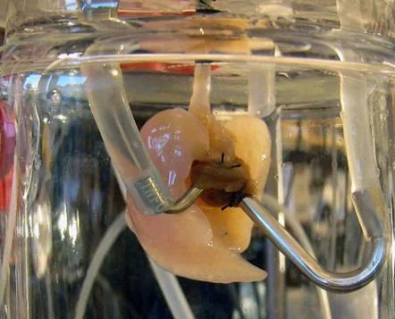

home
Introduccion
En los últimos años, el campo de la ciencia médica ha sido testigo de avances notables en el desarrollo de órganos artificiales, revolucionando la forma en que abordamos las condiciones que amenazan la vida y la insuficiencia orgánica. Uno de esos avances que ha captado la atención de investigadores, médicos y pacientes por igual es la creación de pulmones artificiales. Estos dispositivos sofisticados tienen el potencial de transformar la vida de las personas que padecen enfermedades respiratorias graves y ofrecen un rayo de esperanza donde los tratamientos tradicionales se quedan cortos.
